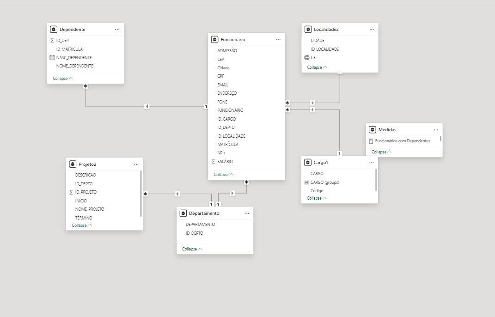

Nesta etapa, foi realizada a importação da base de dados em formato Excel para o Power BI. Foram exploradas as diferentes opções de visualização oferecidas pela ferramenta para entender a estrutura e os dados iniciais do projeto.
Após a visualização inicial, foram aplicadas algumas transformações nos dados para prepará-los para análise. Isso incluiu limpeza de dados, padronização de formatos e criação de novas colunas.
Com os dados preparados, foram estabelecidos relacionamentos entre as diferentes tabelas do conjunto de dados. Isso foi essencial para realizar análises mais complexas e criar visualizações que integrassem informações de diferentes fontes.
Layout desenvolvido por Emílio Estêvão Jalane